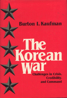

A diplomatic history of the Korean War focusing on foreign policy decisions that directed U.S. involvement
A diplomatic history of the Korean War focusing on foreign policy decisions that directed U.S. involvement


 A diplomatic history of the Korean War focusing on foreign policy decisions that directed U.S. involvement
A diplomatic history of the Korean War focusing on foreign policy decisions that directed U.S. involvement

|  |
The Korean WarChallenges in Crisis, Credibility, and CommandBurton I. Kaufmancloth EAN: 978-0-87722-418-1 (ISBN: 0-87722-418-8) |
This diplomatic history of the Korean War examines the "police activity" whose effect on the Cold War has dominated international relations since 1945. While the major military decisions and events of the war are covered, Burton I. Kaufman focuses on the foreign policy decisions that directed U.S. involvement in Korea and that significantly defined America�s role as a world military-political power.
The subtitle outlines the three major areas of investigation. The first challenge was the atmosphere of crisis that pervaded Washington in the late 1940s and early 1950s. The Red Scare, McCarthyism, and the fear of Communist expansion abroad mobilized political and public sentiment in favor of military intervention. Then, in an effort to maintain its credibility at home and abroad, the Truman administration committed U.S. troops to a local conflict in a little-known country for almost three years.
The third challenge, a "crisis of command," relates to the problems of command in the first major conflict (except for the War of 1812) in which the United States had to accept less than total victory. The power struggle among civilian leadership and military commanders culminated in the dismissal of General Douglas MacArthur as commander-in-chief for the Far East. In a concluding chapter, Kaufman compares the Korean conflict with the war in Vietnam in an effort to bring the lessons of history to bear on the most recent major U.S. military involvement. The Korean War is a timely analysis of an important chapter in U.S. diplomatic history.
Burton I. Kaufman is Professor of History at Kansas State University. His other books include Efficiency and Expansion: Foreign Trade Organizations in the Wilson Administration (Greenwood), The Oil Cartel Case (Greenwood), and Trade and Aid: Eisenhower�s Foreign Economic Policy, 1953-1961 (Johns Hopkins).
© 2015 Temple University. All Rights Reserved. This page: http://www.temple.edu/tempress/titles/408_reg.html.